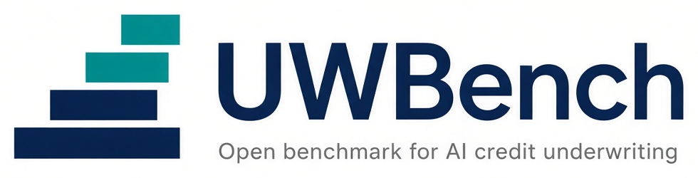

01
Liability
AI underwriting is coming. So is the liability. Banks hire outside auditors for a reason. An independent party stands behind the check.

Express interestOpen benchmark
You are invited to join as a founding member or a founding researcher.
01
AI underwriting is coming. So is the liability. Banks hire outside auditors for a reason. An independent party stands behind the check.
02
Every vendor grades its own homework. Today, there is no neutral test.
03
When one goes wrong, you must show it was tested independently.
01 Held out
Test cases are kept in a separate private store. They are never put in the public set.
02 Same rules
Same cases. Same rules. One open contract. Any tool can plug in.
03 Scored
Each score names the model, the setup, and the lane. Scores are benchmark artifacts, not credit opinions.
Public alpha. No results published yet.
210 held-out cases, planned.
First public results by Q2 2027 at the latest.
After that, the rules are set.
Still open
3 to 5
Tell us if you want to join as a founding member, a contributor, or a lender participant.
Or book a call. The booking page is on a SecureLend calendar.
The form did not load. Email tobias@underwritingbench.com.
SecureLend is one participant and a founding contributor, and it has a conflict.
UWBench was started by SecureLend, which builds AI underwriting tools and takes part as one participant. SecureLend holds one board seat, no veto, and recuses itself on its own scores. Answer keys are held by a neutral custodian.
SecureLend is the first reference participant, not the owner of this repository.